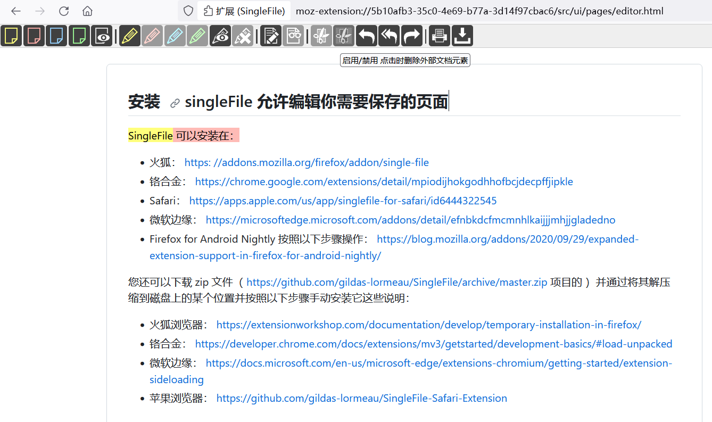

网页剪藏的最佳方案
可以完美的保存第一案发现场（不是
步骤一
使用
singleFile
截取网页中需要的部分
它支持标注和编辑需要保存的页面，并且可以删除不需要的元素

步骤二
将保存的html拖动到思源，并且使用iframe标签显示
如下我剪藏了 SingleFile github 文档中安装部分：
gildas-lormeau_SingleFile_ Web Extension and CLI tool for saving a faithful copy of a complete web page in a single HTML file (2023_10_8 18_50_20).html
目前唯一的缺点是思源无法搜索内容